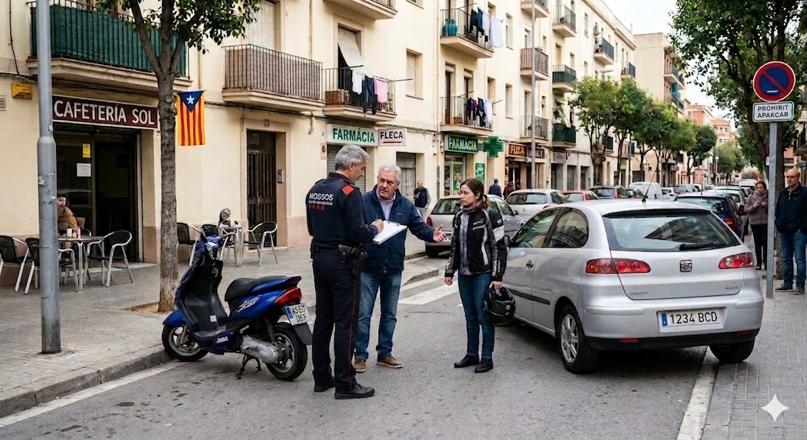
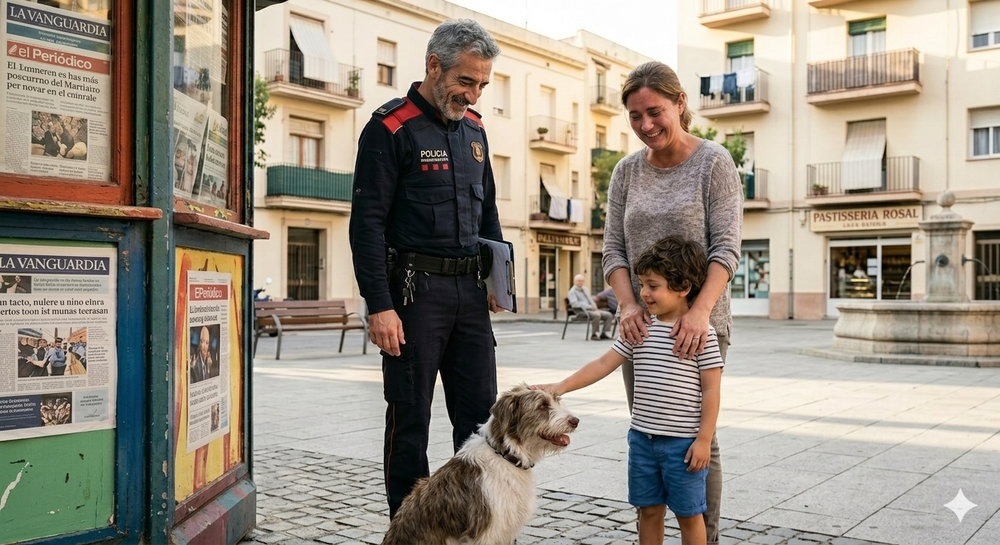
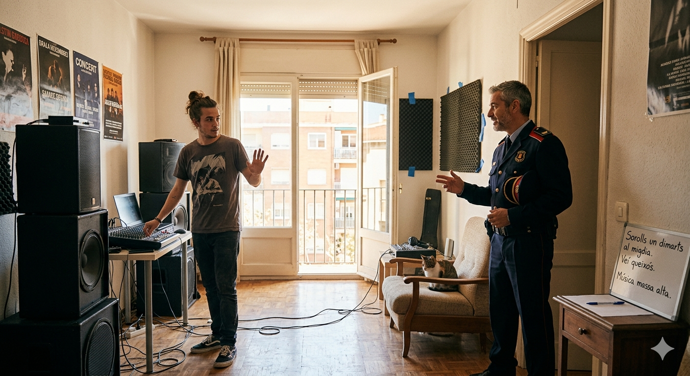
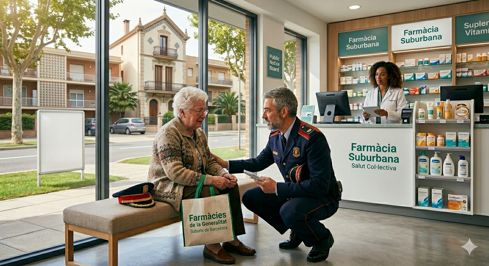
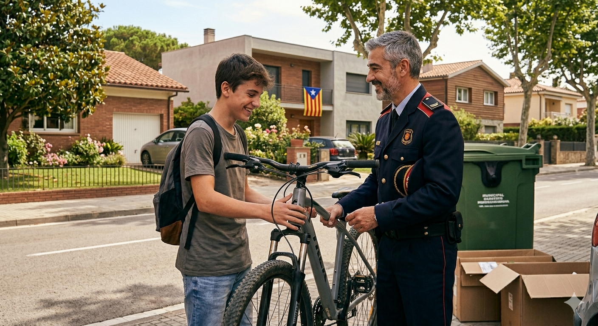
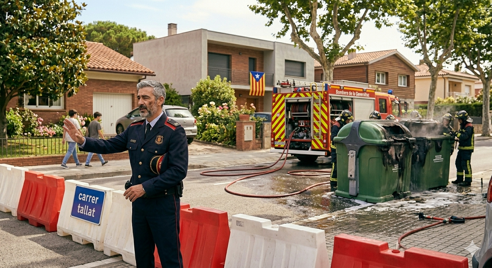

Exercici 1 · Completa les incidències
Prem el botó de cada imatge per escoltar el fragment corresponent. El mateix botó serveix per pausar i continuar el fragment. Cada imatge té el seu propi botó de correcció.

Quan he començat el , m'han trucat per un . Un cotxe ha tocat una moto . No hi ha hagut . He identificat els i he fet l'informe.

Després una dona ha vingut . El seu fill de quatre anys s'havia . Hem buscat per les i l'hem trobat darrere el mirant un .

A les onze, un s'ha queixat de música molt . Era un jove provant per a una festa. Li he explicat que la gent o .

Una farmàcia ha avisat que una senyora no sabia on . Quan he arribat, plorava de . He parlat amb ella fins que ha recordat el . L'he acompanyada a .

Un poc més tard, un noi ha denunciat que li havien pres la . Mentre feia la , n'he vista una d'abandonada darrere un . Era la seva i l'he .

Abans d'acabar el torn, hem rebut una . Dos contenidors . Els bombers ja hi . He tallat el fins que han apagat el .
Exercici 2 · Comprensió del relat
Escolta el vídeo complet i respon. Algunes preguntes demanen interpretar la situació, no només recordar una paraula exacta.
Puntuació: 0/10Exercici 3 · Del perfet al passat perifràstic
Ara llegiràs un resum escrit l’endemà del torn. En el vídeo original, el policia explica el que ha passat durant el seu torn i fa servir sobretot el pretèrit perfet: he arribat, hem rebut, ha plorat...
Quan expliquem fets molt recents o relacionats amb “avui”, en català sovint utilitzem el pretèrit perfet: he fet, hem trobat, ha avisat.
Però aquest resum parla del que va passar ahir. Els fets es presenten com una narració acabada. Per això els verbs passen al passat perifràstic: vaig fer, vam trobar, va avisar.
Escriu la forma correcta del passat perifràstic a cada buit. Les pistes són infinitius i estan barrejades.
Infinitius disponibles:
Al començament del torn, l’agent d’un accident entre un cotxe i una moto aparcada.
Després, els conductors i l’informe.
També les persones implicades en l’accident.
Més tard, el nen darrere un quiosc mirant un gosset.
Quan un veí es va queixar de la música, l’agent la importància del descans veïnal.
Finalment, el jove el volum.
En una altra incidència, l’agent una senyora gran desorientada i la a casa.
Abans d’acabar el torn, l’agent una trucada per un incendi.
Quan els bombers treballaven en el foc, l’agent el carrer.